キャットタワーにまつわるあれこれ [梅吉]
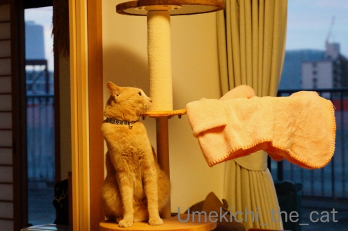
![[猫]](https://blog.ss-blog.jp/_images_e/101.gif) これはー！！
これはー！！
キャットタワーのポール部分、見慣れないものが巻きついているのを発見した梅吉さん。

指導者、再びw
指導者の方、100均でカーペットを買ってきてポールに巻きつけました＾＾

こうやって使うんですよーと再熱演。
が、全く興味なしのお顔をする梅吉さん。
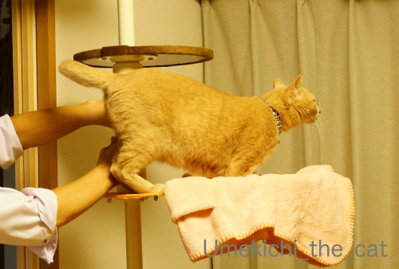
1㎜も関心ありません(⌒-⌒;
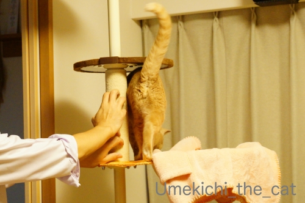
サービスショット♡
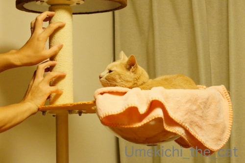
やっと視線を向けるもものすごく眠そうです。

おとーさん、なにがんばってはるんやろ

ひとりできばってや・・・・
今回の実演はうまく伝わらなかったようでした。
・・・と！
最近梅吉がクリアボールに入り浸ってます。ブランケット付きですけれどね。
ブランケットはしばらくこのまま使いますが・・・・・
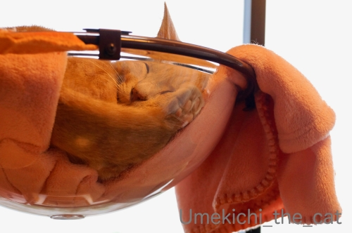
小細工してます0(≧▽≦)0
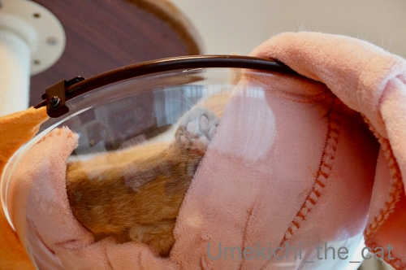
にくきゅうううううううう♡
台風21号、川の氾濫が相次ぎましたね。
被害に遭われた方、お見舞い申し上げます。
 ↑ガブッと一押し↑
↑ガブッと一押し↑
ボールになりきるすももちゃんをみて以前水族館で出会ったこちらの方を思い出しました。
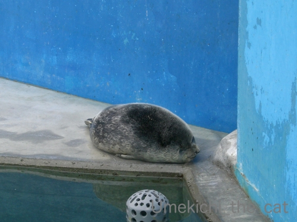
ゴマフアザラシの赤ちゃん0(≧▽≦)0
小脇に抱えられるくらいちっちゃくて見た時にラグビーボールみたいだって思ったのです。
これ以上ラグビーボールないきものはいないと思っていたのに
すももちゃんのボールなりきりに笑ってしまったwww
で、コラボしてみましたよ。
（著者権フリー画像：James Coleman・Westpac Stadium, Wellington, New Zealand
を使用したBossさんの加工画像をお借りしましたm(_ _)m）
オールブラックスの選手も２つのボールに戸惑い気味のような(*>艸<)
14日、日本のラグビー界はどんな朝を迎えているのかしら・・・
カナダチームの皆さん、本当に、本当にありがとうm(_ _)m
他にも今回の災害に関して各国ラグビーチームの良いお話がたくさんあります。
皆さん本当にありがとう！！
キャットタワーのポール部分、見慣れないものが巻きついているのを発見した梅吉さん。
指導者、再びw
指導者の方、100均でカーペットを買ってきてポールに巻きつけました＾＾
こうやって使うんですよーと再熱演。
が、全く興味なしのお顔をする梅吉さん。
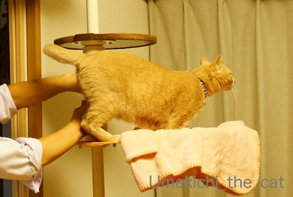
1㎜も関心ありません(⌒-⌒;
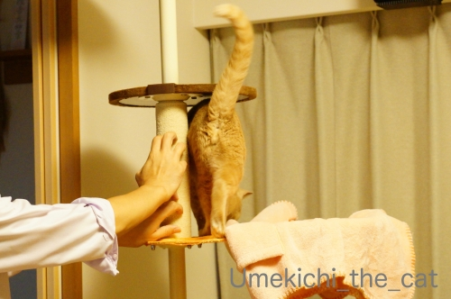
サービスショット♡
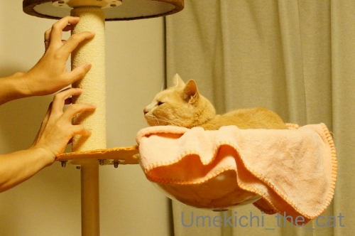
やっと視線を向けるもものすごく眠そうです。
今回の実演はうまく伝わらなかったようでした。
・・・と！
最近梅吉がクリアボールに入り浸ってます。ブランケット付きですけれどね。
ブランケットはしばらくこのまま使いますが・・・・・
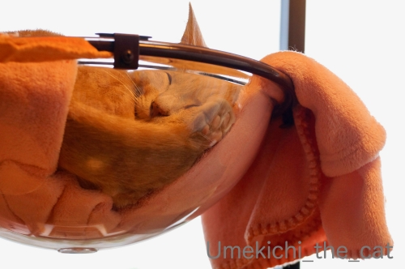
小細工してます0(≧▽≦)0
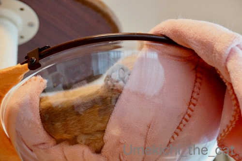
にくきゅうううううううう♡
台風21号、川の氾濫が相次ぎましたね。
被害に遭われた方、お見舞い申し上げます。
ボールになりきるすももちゃんをみて以前水族館で出会ったこちらの方を思い出しました。
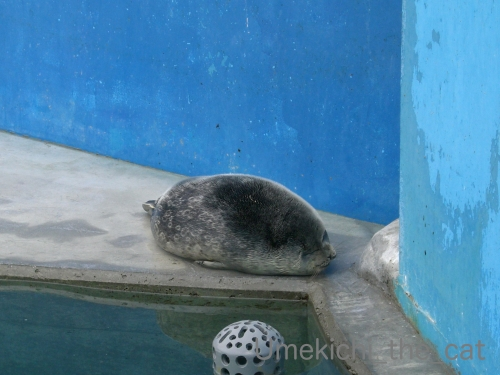
ゴマフアザラシの赤ちゃん0(≧▽≦)0
小脇に抱えられるくらいちっちゃくて見た時にラグビーボールみたいだって思ったのです。
これ以上ラグビーボールないきものはいないと思っていたのに
すももちゃんのボールなりきりに笑ってしまったwww
で、コラボしてみましたよ。
（著者権フリー画像：James Coleman・Westpac Stadium, Wellington, New Zealand
を使用したBossさんの加工画像をお借りしましたm(_ _)m）
オールブラックスの選手も２つのボールに戸惑い気味のような(*>艸<)
14日、日本のラグビー界はどんな朝を迎えているのかしら・・・
rugbyworldcupjp台風19号の影響で、本日の試合が中止になったカナダ代表 @RugbyCanada?? そのまま釜石の町に残り、ボランティア活動を行いました
#RWC2019 #RWC釜石 #NAMvCAN https://t.co/bwTpHAJPsV10/13 15:27
カナダチームの皆さん、本当に、本当にありがとうm(_ _)m
他にも今回の災害に関して各国ラグビーチームの良いお話がたくさんあります。
皆さん本当にありがとう！！

カフェオレ色の梅吉

梅吉 2023年8月10日 永眠


梅吉と出会った譲渡会

犬猫の理由なき殺処分ゼロ
妄想広告
UMEKICHI 光

爆発的に早い！
時々攻撃的！
Thanks to Mr.Boss365
爆発的に早い！
時々攻撃的！
Thanks to Mr.Boss365

お気に召さなかったようですニャ（ﾟ□ﾟ）
by 英ちゃん (2019-10-14 01:16)
こんにちは。
爪研ぎ？指導！！お疲れ様です。梅吉君、猫らしい対応にナイスです。
確実に興味ない感じ？また、職人さんが３時の休憩時に見せる笑顔です（笑）
ちぃさん、諦めないで踏ん張って下さい。梅吉君の為です。
リンクまでして頂き感謝です（笑）
ゴマアザラシちゃん、マジでラクビーボールです。
それも長年使い込まれた感じ？２つのボールはイレギラーですね（笑）
ジャンパーもですが。リフターも戸惑っている感じです（笑）
日本代表、ボコりました。１４日の朝も気になりますが・・・
スコッチで深夜の酒盛り？していると推測です。
追記、釜石でも試合して欲しかった。カナダチームに感謝です！？(=^･ｪ･^=)
by Boss365 (2019-10-14 01:22)
にくきう～～～♡
ナイス小細工です♪
釜石でボランティア、いいお話ですね。
森〇朗が嫌いすぎて「なーにがわーるどかっぷだ」と思っておりました
己の不明を恥じております。。。
by liang (2019-10-14 01:46)
指導者の方ちょっと悲しかったでしょうか。
でもクリアボール越しに見える梅吉さんの寝顔とにくきうが良いですね~。ちぃさん毛布をずらしましたかぁ?
すももさんコラボも面白かったです。
by zombiekong (2019-10-14 01:51)
ダンボールの爪とぎに付いてくるマタタビ粉が余ってますけど、
使ってみます？＾＾
by ぽちの輔 (2019-10-14 06:57)
指導も梅吉さんには興味が無かったんですね。猫の爪研ぎはお気に入りの場所があるみたいですね。
にくきゅうが可愛い(^^)
by kou (2019-10-14 07:55)
梅吉さんったら、実演するおとーさんにおちりを向けるなんてｗ
眠そうなお顔でおとーさんの手を眺めある姿は律儀ですね。
ちょっとした細工による肉球鑑賞は萌えますなぁ
猫を透明アクリルボードの下から観察している写真に見入ったことがあります。
香箱座りの複雑な手足の収納っぷりに萌えガン見しちゃいました。
すももさんとゴマフアザラシさんとオールブラックスのコラボｗ
ラグビーボール型の動物は福々しくていいですね(^^
昨夜の日本vsスコットランドは熱戦でしたねｗ
新たなる歴史が始まる！という感じで昨夜はメンバーは祝杯をあげたのでしょうかね。
by marimo (2019-10-14 08:18)
肉球かわいいにゃあ。
by ニコニコファイト (2019-10-14 09:08)
指導者さまへ：我が家のキャットタワーのポールには麻ひもがぐるぐる巻いてあります！！
おとーさんの熱演と梅吉さんの面倒くさそうなお顔が可笑しすぎます^^
小細工ばんざい＼(^o^)／
ピンクの肉球ありがとうございます♪
昨夜はきっちりボコりましたね！
タックルされながらパスをどんどんつなぐ様子はほんとカッコよかった。
もうラグビーボールはすももさんにしか見えません^^
泥だらけになりながらお手伝いいただいた選手のみなさんにはほんと感謝ですね。
by ゆきち (2019-10-14 09:36)
熱心な指導！！お疲れ様です（笑
梅吉さんはまったく興味無し？？
肉球！可愛過ぎますねぇ～
ずっと見てられます(*´ω｀*)
by きぃ (2019-10-14 09:36)
梅吉さん、無関心でしたか。
一生懸命の熱演も無駄でしたね。
by ma2ma2 (2019-10-14 09:46)
お父さんの熱演に対する梅吉さんの冷めた目線がw
でもクリアボールに入って寛いでくれるようになったから
いつか爪研ぎもしてくれる気がします＾＾
あっ、クリアボールに入って伸びしたら
たまたま爪研ぎに当たってバ〜リバリと始めちゃう気も(^O^)
by ニッキー (2019-10-14 10:29)
あらー、今回はおとーさんの熱演も空しく、だったのですね。
でも、そのうち気が向くとやってくれる、かもよー。
Bossさんところで写真借用のコメントを拝見していたので、どうなるのかなーと思ったら！爆！どっちのボールが使われるんだろー^m^
カナダチームのボランティア活動、私もテレビで見ていました。
すばらしいですね。ただ、口の悪い私は、思わず「カナダは試合終わったの？」って聞いちゃった。じゃないと、やってられないよなーって思って。
by ChatBleu (2019-10-14 14:11)
せっかくの熱血指導も我関せずって感じですね。^^;
by yes_hama (2019-10-14 22:29)
梅吉さん、冷静な態度、流石です。
おとーさん、
実演がだんだん上手になって、
（そのうち）実演のために爪が尖ってくるかも（笑）
ちぃさんの小細工、良い良い（笑）
梅吉さんに悟られないように！（笑）
by kiki (2019-10-14 22:31)
梅吉さんのスルーっぷり！
でも、お父さん何やってんの・と見上げるお顔が可愛い～＾＾
その後の寝顔も‥！
毛布をちょっとずらしておくの、いいですね！
２つのボール、すごーい傑作～＾＾
by sana (2019-10-14 22:35)
クリアボールだと下からもスケスケですね(笑)
いつか伝わって実践することを願っています♪
by yamatonosuke (2019-10-15 02:10)
こんなに一生懸命、実技指導してるのに、
ほんまにまったく関心ないそぶり～(^_^;)
クリヤボール、徐々に慣れてきた感じですねっ！！
by よーちゃん (2019-10-15 10:06)
梅ちゃん！！熱演するおとーさんにもう少し
気を使ってあげてーーー(笑)
ま、これもねこあるあるですよね(((*≧艸≦)ﾌﾟﾌﾟｯ
にくきうちら見せ、たまりませんねぇぇ(ﾟｰ,ﾟ*)ｼﾞｭﾙﾙﾙ
ラグビー、すごかったですねｗｗ
無事試合出来て、予選一位通過❤
そして中止になったチームがボランティア活動(TωT)ｳﾙｳﾙ
いいお話すぎて感動という言葉では表せないです！！
これぞスポーツの醍醐味♪
by カトリーヌ (2019-10-15 11:06)
先生、幸せですね〜 ^ ^
ラグビーだけは外国人が混ざっていても、違和感がない。これこそ、ラグビー精神のなせる技ですね。
by 小松達也 (2019-10-15 17:53)
おとーさん、ご指導お疲れさまでした。
手が美しくて見とれてしまいました。家の夫の手は毛だらけなのでｗ
ゴマフアザラシの赤ちゃんとすももちゃん♪
ホント！どちらもラグビーボールにしか見えなくなっちゃうよ～。
試合中止の選手たち。ボランティア活動をしてくれたんですね。
知りませんでした。
頼もしくてありがたいですね。
by emi (2019-10-15 23:49)
梅吉くん、今回はおとーさんは無視なのね(笑)
きっと「そんなことわかってるよ。おとーさんたちがいないときは、ちゃんと爪研ぎするにゃ」って思っているのかもしれない！
・・・いや、思ってないなｗｗ
クリアハンモック、ちゃんと活用されてますね^^
こっそり見える肉球にニヤニヤｗｗ
寝顔もとっても気持ちよさそうよ♪
ちゃんと顔が見えるのがいいなあ。あおは毛に埋もれて見えん！(笑)
by リュカ (2019-10-16 13:13)
その後ご指導の効果はいかがでしょう。
爪研いでくれるといいですね。
クリアハンモック、コロンと入る姿がかわいい！やっぱり肉球はいいですね(≧▽≦)
by palpal (2019-10-16 20:31)